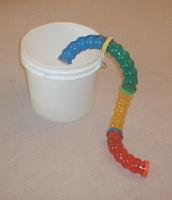
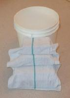

| The question repeatedly comes up: How do I catch my AWOL hamster? Most of the following suggestions are oldies but goodies, but they are successful. Before getting to the information on "trapping," first take a brief survey of the room where the hamster escaped from. Seal off doors and closets with a towel, remove any cats or dogs from the area (and if possible, keep them outside). Survey the floor for poop and/or seed trails, and check under furniture. Call to your little Houdini in your familiar hammie call, and offer a treat. For some odd reason that only hammies understand, they love kitchens and bathrooms. They can often be found behind a stove, refrigerator, or toilet. Floor level heating vents are another popular vacation spot. Once you've done the survey, try any and all of the following: Place the hamster cage on the floor, door open, with fresh food inside. The theory is that once they are tired of wandering, they want to go home. Check the cage frequently. You can make a trail of food leading to the cage (and it helps to have previously "trained" your hamster to come to the sound of a noisy treat, like a box of cheerios, or yogurt drops. The sound of the box being shaken and the treats left out may lure them in). A variation on this is to add crinkled newspaper around the cage area, so you can hear any little paws walking on the paper. Put a wheel near the cage and listen for squeaks. The bucket trick is another popular lure. Use a clean, small bucket and add a ladder of books or something (maybe covered with a towel for traction) to enable the hammie to climb up the side (providing a trail of food around the bucket). Put treats inside the bucket (they can smell a dab of peanut butter from anywhere within the house!). Hammie climbs in for the treats, and you’ll find him curled in a ball sound asleep the next morning. An interesting addition to this is to use some tubing from the hamster cage, if available, and let them into the bucket through tubes. |
| f your hamster has a friend or mate at home, take the mate out and play -- jealousy and the desire for treats may make an impression, as may raging hormones. You may also spot the escapee during the nightly zoomer ball travels of the other hamsters. Humane traps are not suggested. They are not intended for pets, and the dangers of use for a hamster outweigh the potential benefits. If you have more than one level in your home, set up a "hamster catcher" on each level. Try to stay awake as late as possible, when the hamster is more likely to be active and roaming. And don't give up. One hamster was recovered in an apartment one floor below where he lived, three months after the escape, dirty, hungry and dehydrated, but able to make a full recovery. A little observation of how your hamster uses the cage may give you some insight into possible escape routes before they occur. My husband and I no longer say goodnight to each other. Our last words before falling asleep at night are "Did you make sure to lock the cage?" |
| Catching a Hamster Escapee by Judy Nielsen |
|  |
|  |